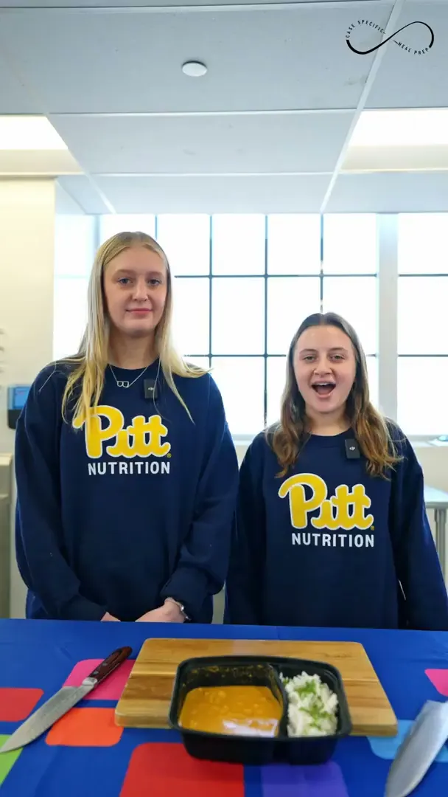
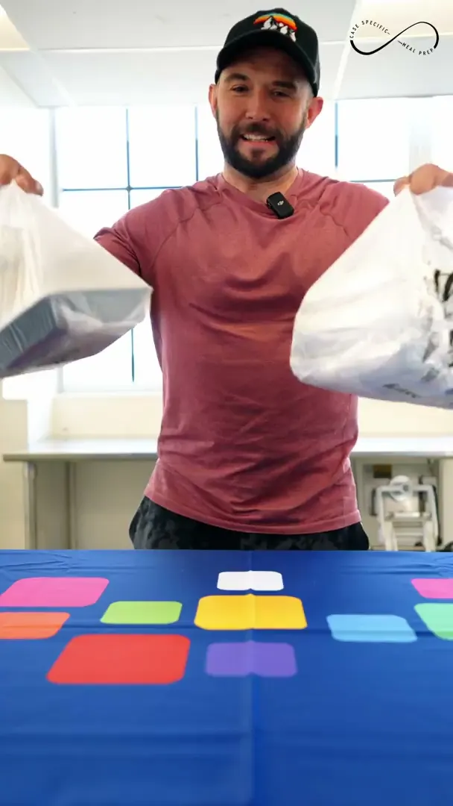

CASE SPECIFIC
MEAL PREP
Author: Mike Pernice, Founder · Last updated: September 2026
Case Specific Meal Prep is a Pittsburgh-based meal prep and catering company owned by Vince, with Chef Dom creating personalized, healthy dishes. The Stoop managed their organic social media presence for one year — producing content, managing themed weekly series, designing catering menus, and coordinating influencer kitchen collaborations.
The Challenge
Case Specific Meal Prep had a strong product — personalized, healthy meals made by Chef Dom — but needed a consistent social media presence to build awareness, drive orders, and establish credibility in Pittsburgh's competitive meal prep market. They needed content that showcased the food, told the brand story, and engaged the local community.
Themed Weekly Series
A one-year organic social media engagement built around a monthly content calendar and themed weekly series on Instagram, plus daily interactive story posts and influencer kitchen collaborations. Food photography of Chef Dom's dishes — plated meals, meal preparation, and fresh ingredients — showcased the food straight from the kitchen.


Our Approach
- Monthly content calendar with themed weekly series across Instagram
- Chef's Choice series — step-by-step dish creation with Chef Dom
- Ingredient Spotlight — nutritional information on ingredients used
- CSMP Spotlight — featuring staff and community partners
- Influencer in the Kitchen — local influencers invited for 1-hour shoots, creating content in exchange for free meals and posting about the food
- Client Testimonial posts promoting customer feedback
- Vendor Spotlight — showcasing ingredient sourcing and local suppliers
- Healthy Tip series — turning unhealthy meals into healthy alternatives
- Catering menu design — breakfast, lunch/dinner, and in-flight menus
- Daily interactive story posts (reminders, engagement questions)
Want a themed content calendar running on your feed every week?
Plan Your Social CalendarSpotlight Series
Two videos from the CSMP Spotlight series — featuring staff and community partners.


Want a spotlight series featuring the people behind your brand?
Plan Your Video SeriesLogo & Catering Menus
The CSMP logo in white and black versions, alongside three catering menus — breakfast, lunch/dinner, and in-flight — that expanded CSMP's service offerings into corporate catering.
Have a menu, program, or offering that needs designing?
Start a Design ProjectOur Process
Plan
A monthly content calendar planned themed weekly series across Instagram — Chef's Choice, Ingredient Spotlight, Influencer in the Kitchen, and more — for the length of the one-year engagement.
Produce
Food photography of Chef Dom's dishes, step-by-step Chef's Choice cooking, nutritional information for Ingredient Spotlight, and the CSMP Spotlight videos.
Activate
Local influencers came into the kitchen for 1-hour shoots, creating and posting content about the food in exchange for free meals, while customer feedback became Client Testimonial posts.
Sustain
Daily interactive story posts — reminders and engagement questions — kept Case Specific Meal Prep's social presence consistent day to day.
A Year of Consistent Content
Over a one-year engagement, The Stoop delivered 15,000+ combined impact across Instagram — producing consistent, professional content that showcased Chef Dom's dishes and built Case Specific Meal Prep's brand presence. The themed content series — Chef's Choice, Ingredient Spotlight, and Influencer in the Kitchen — gave the brand a recognizable content format that audiences engaged with weekly. The catering menu designs expanded CSMP's service offerings into corporate catering, and the influencer collaborations brought new audiences through authentic kitchen content.
Read the full breakdown on the blog: How to build a themed content calendar for food & beverage brands
Questions About This Project
What did The Stoop do for Case Specific Meal Prep? +
One year of organic social media management on Instagram with themed weekly series (Chef's Choice, Ingredient Spotlight, and Influencer in the Kitchen), a spotlight video series, logo variants, and three catering menus.
What were the results? +
15,000+ combined impact and 8,127 total views over the year, plus catering menu designs that expanded Case Specific Meal Prep into corporate catering.
Who is Case Specific Meal Prep? +
A Pittsburgh-based meal prep and catering company owned by Vince, with Chef Dom creating personalized, healthy dishes.
Have a food brand ready to grow?
Let's cook up something great together.


{kind=link}
{kind=link}
{kind=link}
{kind=link}
{kind=link}
{kind=link}
{kind=link}
{kind=link}
{kind=link}
{kind=link}